Last Updated: 2021-06-28
Overview
This guide provides an overview of the features of MUnit to spy on a certain message processor before and after its execution as well as validating the number of times a particular message processor was called.
What you'll build
You'll build a test suite leveraging Spy event processor. The test suite checks and verifies payload before and after its transformation at a certain processor.
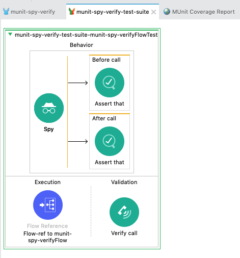
What you'll learn
- How to set up Spy event processor in MUnit test suite
- How to execute the test suite
What you'll need
- Anypoint Studio 7.5.0 or later
- MUnit 2.2.5 or later
- MUnit Anypoint Studio Plugin 2.5.0 or later
- Mule Runtime Engine 4.3.0 or later
Start Up Anypoint Studio
Open Anypoint Studio if you haven't opened it. Any workspace is fine.
Create a new Mule Project
From File menu choose New > Mule Project.
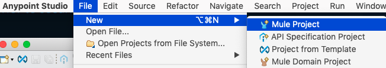
In the New Mule Project window, give the project a name (e.g. munit-spy-verify), select a Runtime (e.g. Mule Server 4.3.0 EE), and then click on Finish.
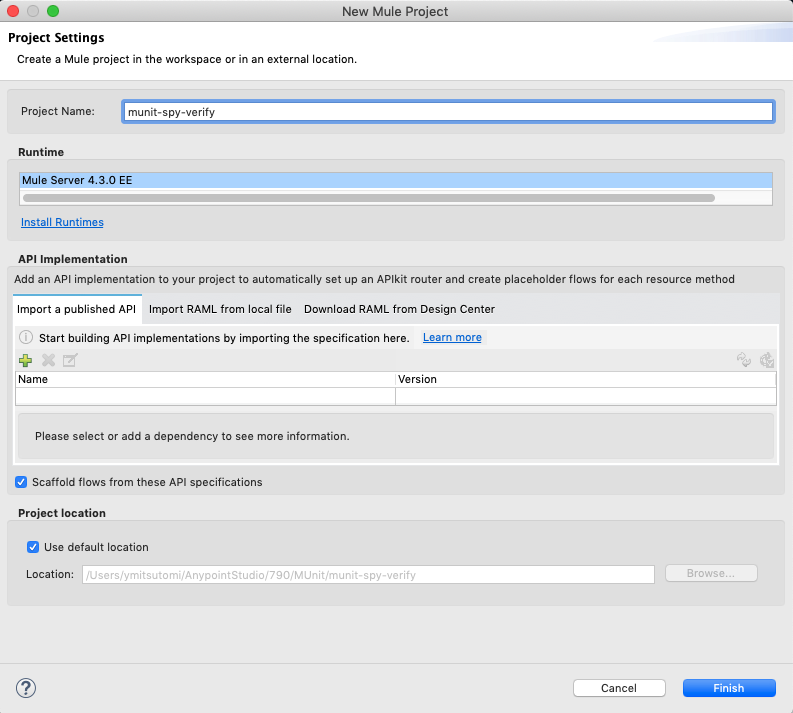
Set up HTTP listener
Once the new project is created, you'll be presented with a blank canvas.
From the Mule Palette on the right, drag and drop HTTP > Listener component onto the canvas.
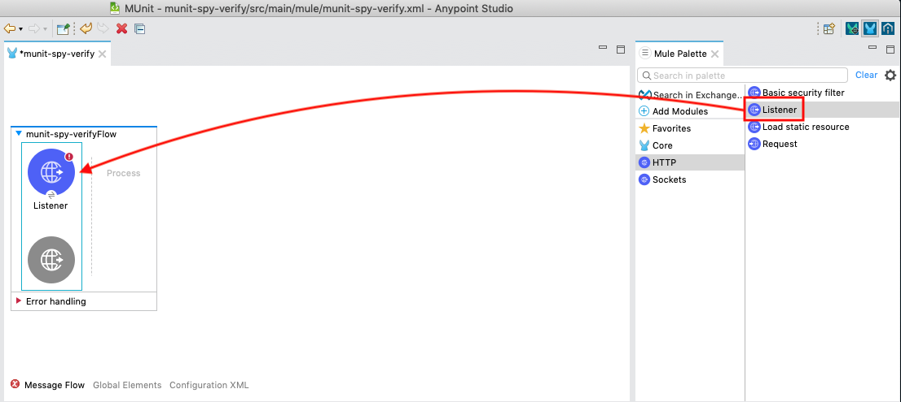
For the Mule Properties of the Listener, click on the green plus sign to create a new Connector configuration.

Under the General tab, and in the Connection section, keep the default selection. Then click on OK.

Back in the Listener Mule properties tab, fill in the Path field with the following:
/spy
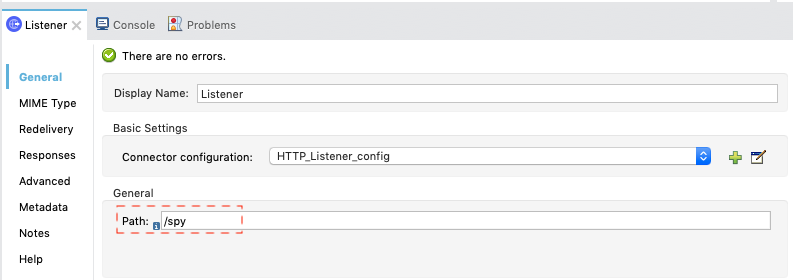
Set up Transform Message component
From the Mule Palette on the right drag and drop Core > Transform Message component onto the flow created in the previous step.
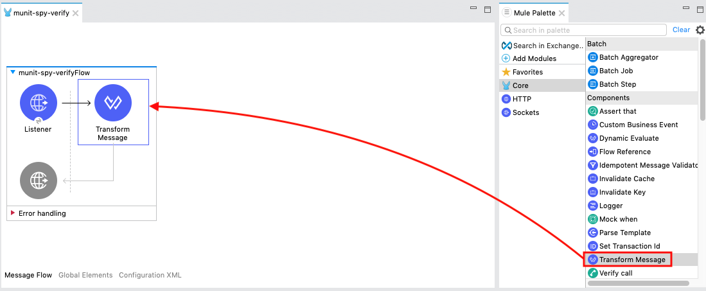
Click on the Transform Message component. Copy and paste the following DataWeave Script.
%dw 2.0
output application/json
---
['111','222','333']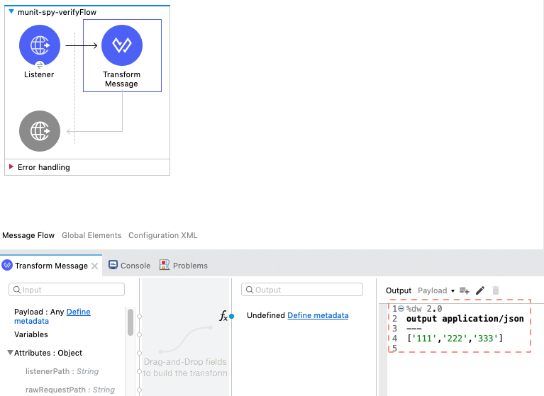
Set up Logger component
From the Mule Palette on the right drag and drop Core > Logger component onto the flow created in the previous step.
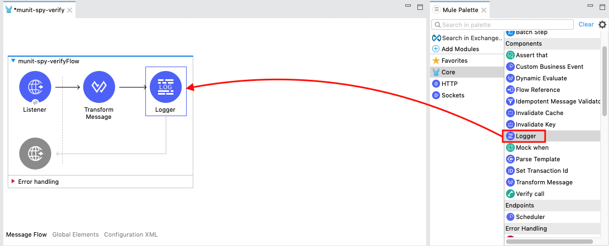
Click fx button on Message field to make it Expression Mode.
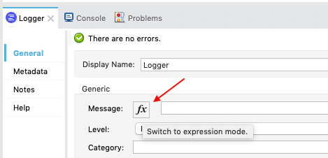
Set the Message field to the following:
payload
Start up the Mule Application
Our next step is to test the flow we've built. Right click on the canvas and choose Run project munit-spy-verify.
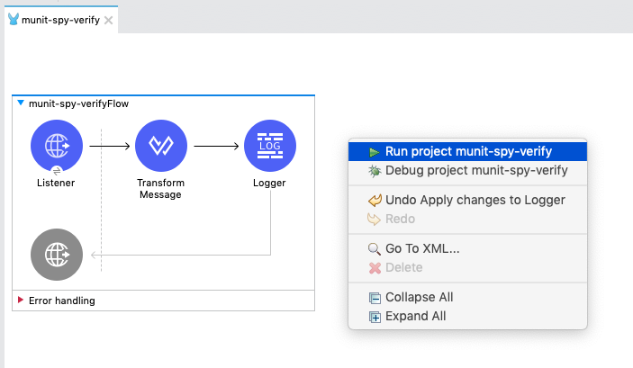
The Console tab should pop-up now. Wait for the status to show DEPLOYED before moving onto the next step.
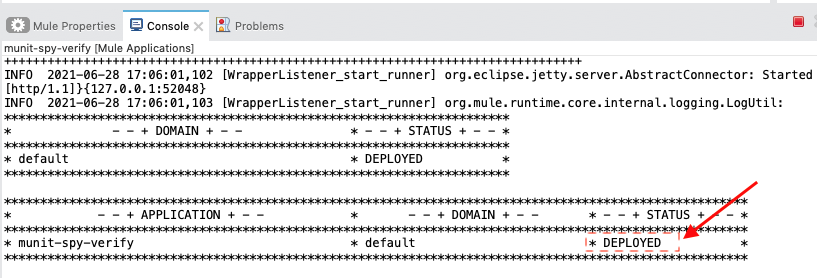
Run the Mule Application to test
Open up your browser and enter http://localhost:8081/spy in the URL bar.
If everything was configured correctly, you should see the following screen below:
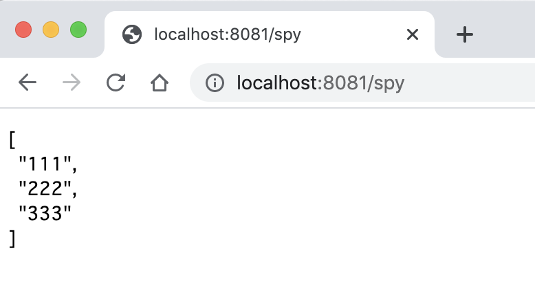
Hit Terminate icon and stop the application.
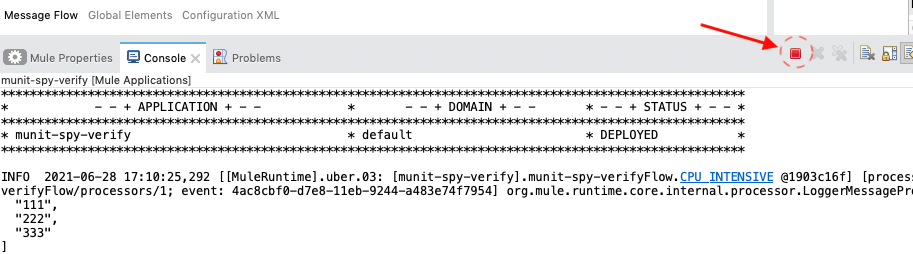
Generate blank MUnit test case
Back in Studio, let's create the Munit Test Suite.
Select and right-click on the flow. Choose MUnit > Create blank test for this flow.
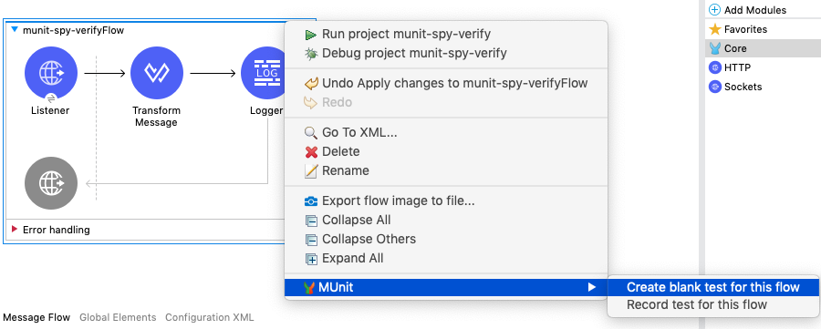
The blank MUnit Test scope will be created. In the execution, you'll see the Flow Reference to the flow in the Mule application.
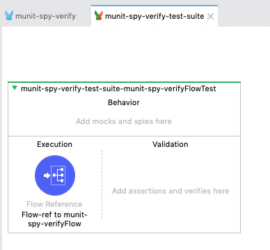
Add and Configure Spy Processor
The Spy Processor allows you to spy what happens before and after an event processor is called. We will add the processor to test the transform processor transforms the data as we expect.
From the Mule Palette, drag and drop the MUnit Tools > Spy into the Behavior section of the Test scope.
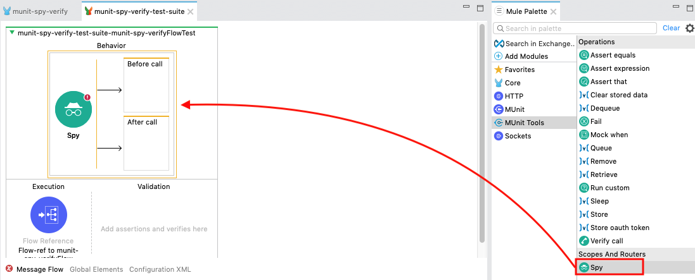
In the Mule Properties tab, hit Pick processor button.
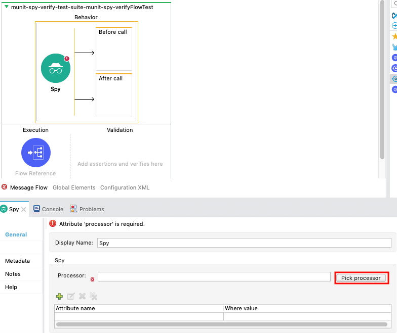
Double click Transform Message. Then tick doc:id in Attributes for Transform Message section. Hit OK button when it is activated.
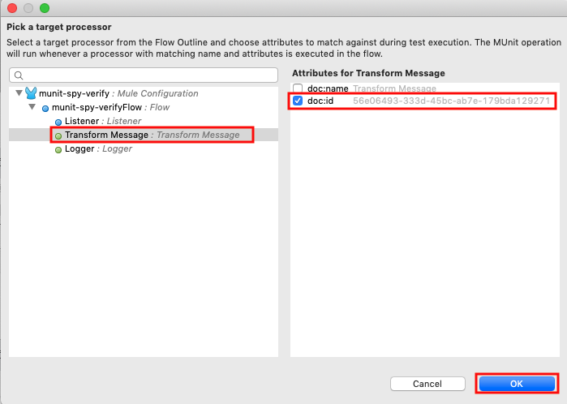
Add and configure Assert processor
From the Mule Palette, drag and drop the MUnit Tools > Assert that into the Before call and After call boxes of the Spy component in the flow.
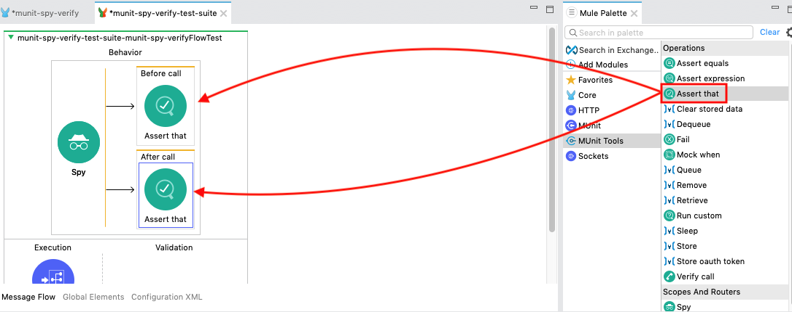
For the Assert that in the Before call, hit fx button on Expression field to make it expression mode and type the following:
payload

On Is field, change the value from
MunitTools::notNullValue()
to
MunitTools::nullValue()
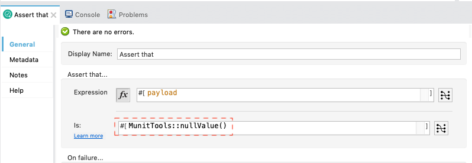
For the Assert that in the After call, hit fx button on Expression field to make it expression mode and type the following:
payload
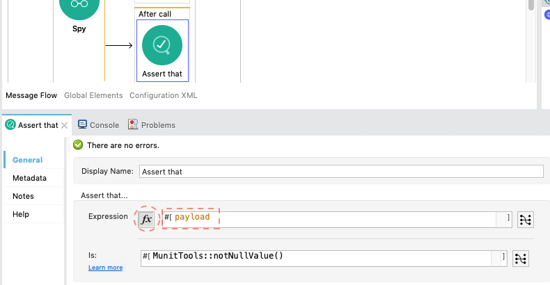
On Is field, change the value from
MunitTools::notNullValue()
to
MunitTools::withMediaType('application/json')
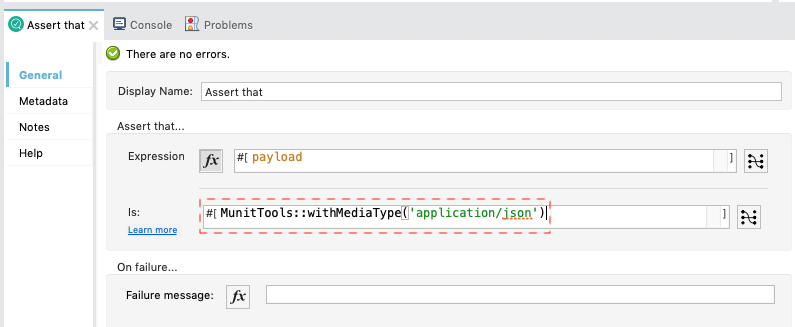
Add and configure Verify processor
Lastly we want to verify the call with the Verify call component.
Drag the MUnit Tools > Verify call component into the Validation section of the Test scope.
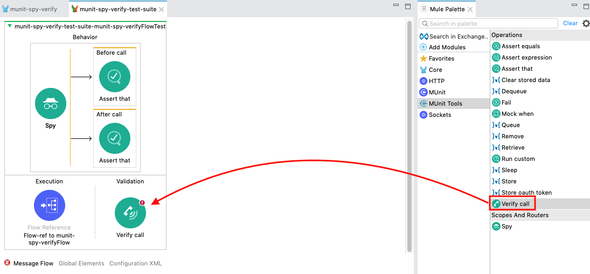
In the Mule Properties tab, hit Pick processor button.
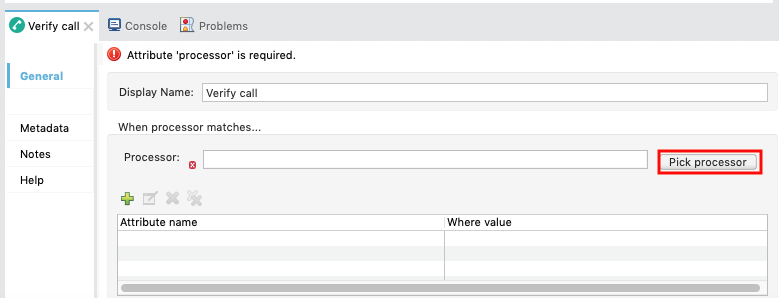
Double click Transform Message. Then tick doc:id in Attributes for Transform Message section. Hit OK button when it is activated.
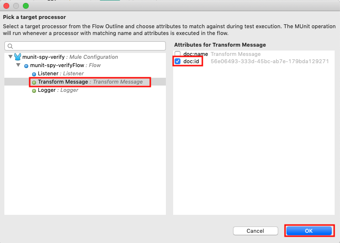
Scroll down until you see Validate that... section.
Choose Is equal to... on the Comparison field. Then type in 1 in the Value field.
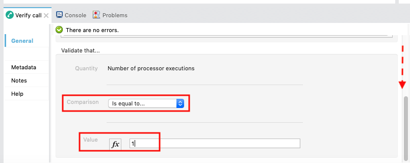
In this next section, we'll run the MUnit suite and see the results of the test. The Studio Console will show the output of the flow. Additionally there are views for MUnit to show the results, errors, messages, and coverage reports.
Run the test suite
Now that the test is setup, let's run the test suite and see if it passes.
Right click on the flow and select Run MUnit suite.
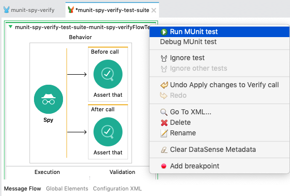
If everything was configured correctly, the Console will show that the test was a success.
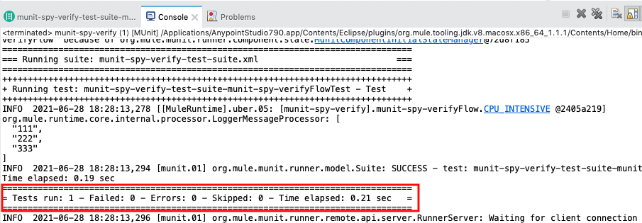
Additionally the MUnit tab will show the run was successful with zero errors and failures.
In the MUnit Coverage tab, click on Generate Report
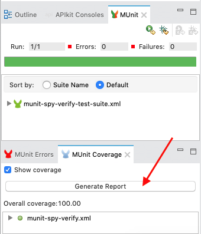
A MUnit Coverage Report will be generated and show an overview of the overall coverage of the tests.

Lastly, if you switch back to the Mule flow, you'll see a green checkmark next to each processor that shows what the MUnit test covered.
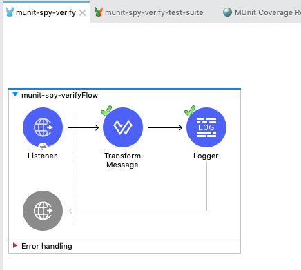
Congratulations, you've successfully create a MUnit test case using Spy event processor.
What's next?
Check out some of these codelabs...
- TBD